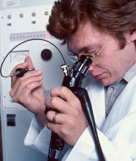

Giá trị khác biệt tại Dr.Giang

Quy trình nội soi chuẩn thế giới
Quy trình nội soi cam kết thời gian quan sát ít nhất 7 phút đồng thời chụp tối thiểu 22 tấm
hình tại các vị trí có nguy cơ tổn thương cao.

Máy móc, thiết bị hiện đại
Hệ thống máy móc, thiết bị cao cấp, hiện đại, đạt chuẩn thế giới, được chọn lọc kỹ lưỡng, hỗ
trợ cho kết quả chính xác cao.
Kỹ thuật nội soi hiện đại hiện nay
Sử dụng các kỹ thuật nội soi hiện đại hiện nay để chẩn đoán nhanh hơn, chính xác hơn, giảm
tỷ lệ bỏ sót và đồng nhất về kết quả.
Đội ngũ bác sĩ, chuyên gia hàng đầu
100% Bác Sĩ được tập huấn chuyên sâu về nội soi chẩn đoán bệnh lý ống tiêu hóa.